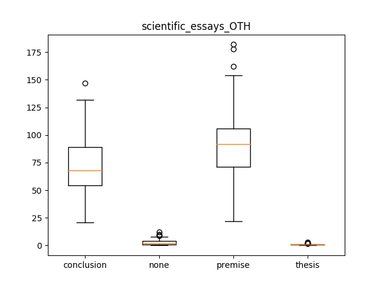

scientific_essays_OTH
Describing the Data-Set
Mean, Median and Standard Deviation
|
conclusion |
none |
premise |
thesis |
| median |
68.000000 |
2.000000 |
92.000000 |
1.000000 |
| mean |
71.872340 |
3.106383 |
92.765957 |
0.914894 |
| std |
27.834325 |
2.837695 |
35.277148 |
0.678853 |
QQ Plots
Histograms
Box Plot(s)

Normalization Test
stat: 0.967660009861, p-val:0.215413570404
Normally distributed for OTH classified as conclusion
stat: 0.852509558201, p-val:3.00863357552e-05
Not Normally distributed for OTH classified as none
stat: 0.967618644238, p-val:0.214619830251
Normally distributed for OTH classified as premise
stat: 0.796977639198, p-val:1.35849393246e-06
Not Normally distributed for OTH classified as thesis
Significancy Test
Using friedmann-test
Using friedmann-test
using stats.friedmanchisquare
chisq: 121.620390456
p-value: 3.45492716705e-26
statistic: 252.776830344
p-value: 1.11022302463e-16
chi2:119.291489362
ranking[1.7553191489361701, 1.2446808510638299, 3.7234042553191489, 3.2765957446808511]
Post Hoc Analysis (holm_multitest):
------------------------------------------------------
Comparing: premise vs thesis
z_value: 9.30759813157
p_value: 0.0
adj_p_value: 0.0
--------------------------------------------------------------------------
Comparing: thesis vs conclusion
z_value: 7.6298336615
p_value: 2.35367281221e-14
adj_p_value: 1.1768364061e-13
--------------------------------------------------------------------------
Comparing: none vs premise
z_value: 7.39015302292
p_value: 1.46549439251e-13
adj_p_value: 5.86197757002e-13
--------------------------------------------------------------------------
Comparing: none vs conclusion
z_value: 5.71238855285
p_value: 1.11401372571e-08
adj_p_value: 3.34204117713e-08
--------------------------------------------------------------------------
Comparing: none vs thesis
z_value: 1.91744510865
p_value: 0.0551814081812
adj_p_value: 0.110362816362
--------------------------------------------------------------------------
Comparing: premise vs conclusion
z_value: 1.67776447007
p_value: 0.0933930880154
adj_p_value: 0.110362816362
--------------------------------------------------------------------------